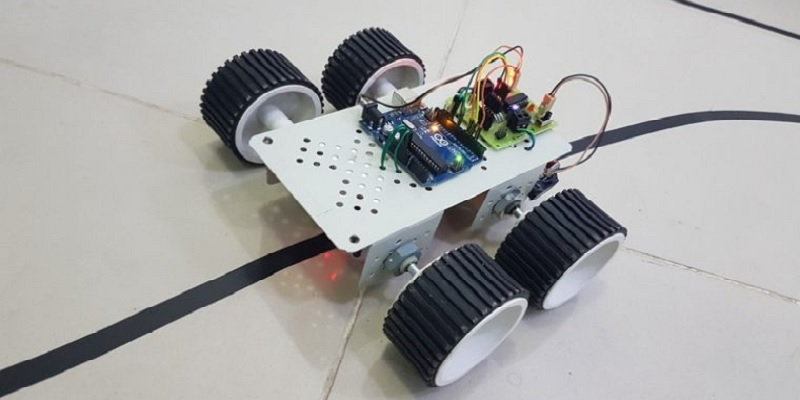
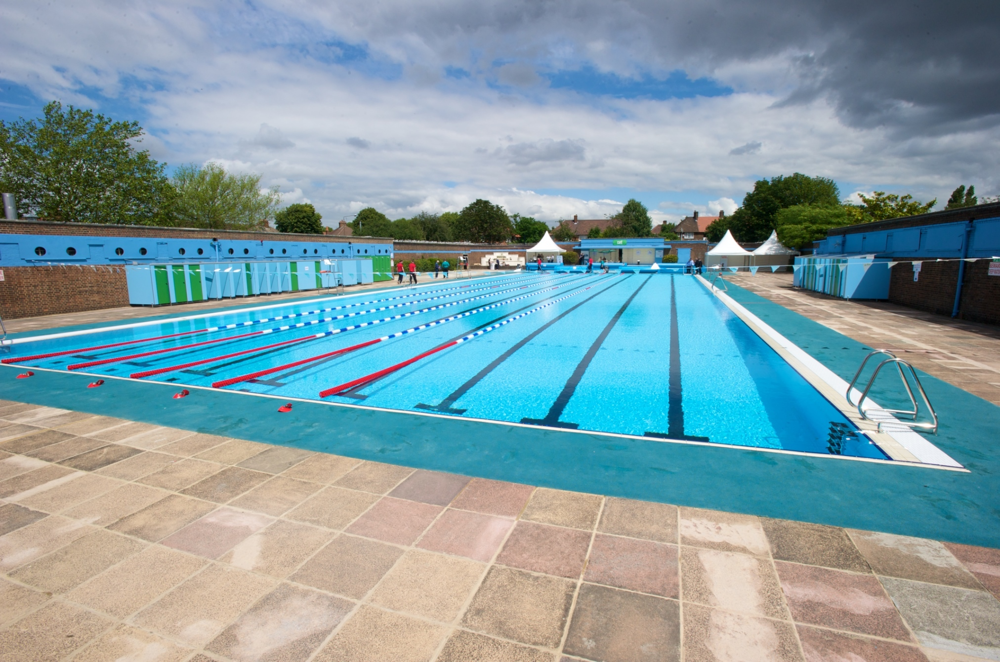

Hi, it's me, Kush Bhagat. You may or may not know me, but either way, thanks for taking your time to check out my website. To get things started, let me tell you a little bit about myself. Right now, I am studying at the University of Waterloo, pursuing a degree in Computer Science and hoping to graduate by 2023. I am a hard-working individual, with excellent time management skills, and I always have a positive attitude. I love to socialize with friends, as well as meet new people, so feel free to contact me!
Introduction
Hobbies and Interests
Now that you know a little bit about me, let me tell you some of my favourite things to do. Some of favourite sports include taekwondo, soccer, and swimming, but I tend to enjoy playing any type of sport that keeps me active. I started to do taekwondo when I was around seven years old, and ended up continuing for about ten years in which I competed in sparring competitions and also became a taekwondo instructor. Similarily for swimming, I started at a very young age and progressed to become a lifeguard and swimming instructor. In relation to other interests, I love to program in my free time, and challenge my self with difficult problems. I have a strong interest in all genres of music, with my favourite being hip-hop.
Projects
Hover or Click on the images below to see description
Connect 4 AI
April 2020 | Pygame
This project was developped in order to create a connect 4 AI that could theoretically always win. To do this, I implemented a depth limited minimax algorithm. This algorithm strategically calculates which move leads to the most success by figuring out what move you are most likely to make. In addition to this, I incorporated an alpha-beta pruning process that reduces the amount of search required. This game was then put together using the UI from Pygame, and allows the user to play as first or second player. Feel free to check out and test the project by cloning the repo on my GitHub.
Sudoku Solver
February 2020
By utilizing a backtracking approach and AC3 algorithm, I was able to create a sudoku solver that solves puzzles in just a few miliseconds.
The AC3 algorithm is in place to maintain arc consistency with all the constraints, and reduce the domain size of all the variables before the
search begins. By incorporating this algorithm, I was able to reduce solve time by almost 50% when comparing it to a normal backtracking algorithm. Feel free to test out the program by cloning it on my GitHub.

Space Surfer
December 2018 - January 2019 | Unity and C#
Starting from scratch, and no knowledge of C# or Unity, I challenged myself to create a 3D video game over the span of just two weeks. The result is a game that imitates the feel of 'Temple Run', where one needs to travel through space in a rocketship while dodging asteriods of all shapes, while collecting coins.
My Website
April 2019 - Present | HTML, CSS, and jQuery
In order to increase my exposure to computer programming, and to challenge my creativity and coding skills, I decided to make a website of my own. My goal was to create a platform that displayed everything that I accomplished and more. Other than that, this project is pretty self-explanatory, since you are looking right at it.
New Venture
September 2018 - April 2019
Diving into one of my favourite projects to date, me and a group of two individuals developped and new business that would revolutionize the window cleaning industry. Our goal was to eliminate the need for manual labour, by transforming the service into automation. We conducted internal and external analyses of the market to understand the feasibility of our business, as well as creating an entire business plan and budget analysis. In the end, our group competed against 2000 other individuals, and managed to qualify for the semi-finals.

Line Follower
December 2018 - June 2018 | Arduino and C++
A simple yet challenging project that involved understanding of both hardware and software. With the use of the Arduino, breadboards, sensors and a whole lot of wires, I was able to create a car that would follow the lines on a certain path. The car was capable of turning, breaking, and also figuring out complex maneuvers arond places where the line would stop.
Work Experience
Software Developer
For my first coop term, I had the opportunity to intern at Rocscience, an amazing company that creates the worlds leading geotechnical software. My time at this company was amazing and I had a lot to learn from it.
My big project for the term was to create a dark mode for all three of their 3D softwares, Slide3, RS3, and Examine3. In order to do this, I had to first clean up their entire UI, by developing my own user interface control system. The goal of this system is to overarch all the UI in all three softwares, so that it becomes much easier to edit and customize all the UI elements. As an example, if a developer was tasked to change the way the scroll bar was colored, rather than going through every single file and tediously hard coding a new color value, they could just change the color within the UI control system. With the UI control system now in place, I started developping the theme manager so that it could switch, control, and edit the theme while the program was running. To do this, I had to make sure that not only all the UI elements changed themes, but also the icons and viewport elements.
The core technical skills that I learned were in relation to the WPF framework, specifically how to combine XAML and C# to customize and create desktop applications. In terms of soft skills, I gained the experience of working in a scrum team environment, where the team would meet every Tuesday and Thursday to discuss what we had done, and what we plan to do. This included giving live presentations to the chief technical officer of Rocscience (Brent Corkum), and also discussing improvements for the software.

Lifeguard and Swimming Instructor
With swimming being one of my passions, I was able to get certifications in Standard First Aid and CPR-C. This allowed me to become a certified lifeguard, as well as the qualification as a swimming instructor. I applied for this position at the Mississauge YMCA, and worked there for one and a half years.
My role included teaching swimming to people of all age groups, from toddlers to seniors. In addition, I was required to teach people of all different types of abilities, whether it was their first time swimming or hundredth. As a lifeguard, I was responsible in monitoring pool activity and ensuring member safety. As well as, leading and managing teams in high-pressure life threatening situations.
President of Computer Science Club
In my last year of high school, I decided to take on a leadership role in the computer science club. With computer programming being something that I wanted to pursue, I found my self prepared and ready for this position. Being familiar with the programming language java already, me and a group of friends decided to hold weekly meetings for the club, to help teach and prepare students for tests and contests that involved programming. For each weekly meeting, we had presentations in place to teach new topics, as well as having challenging questions to support the learning.
Camp Counselor
As a camp counselor, I had to manage a group of 6-10 six year olds for 8 hours a day and 5 days a week. Might seem easy to a few, but it ended up being one of the hardest tasks ever, because these children just had no attention span. This job really tested my ability to think on the spot, as well as thinking outside the box in high pressure situations. Each day as a camp counselor brought new challenges, and each challenge required unique solutions. Throughout my two winter sessions as a camp counsellor, I definitely improved my leadership and problem-solving skills.